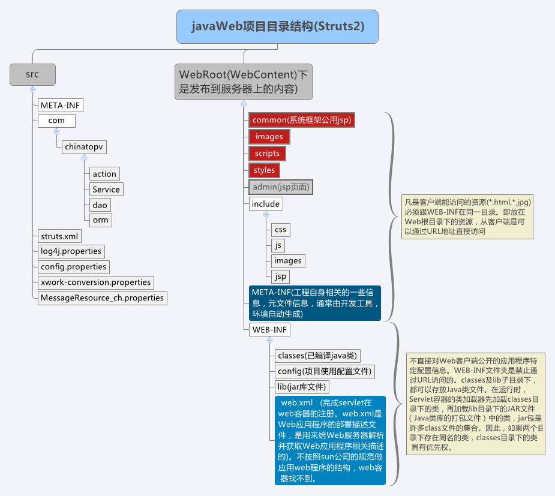
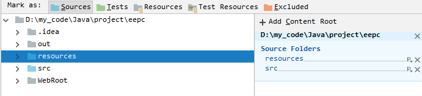
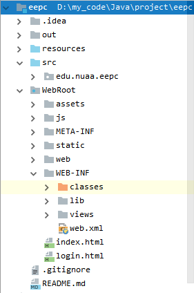
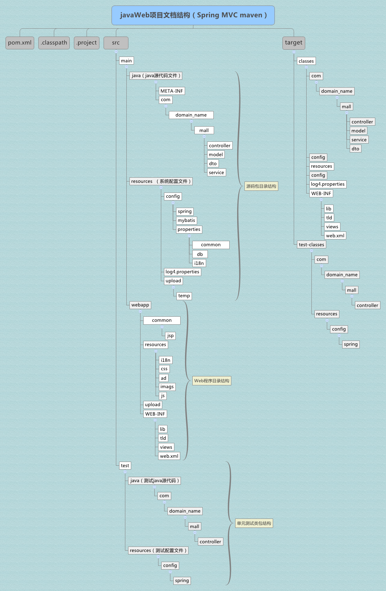
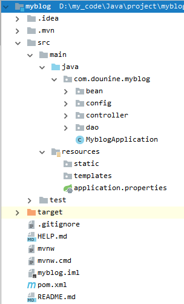

0. 前言
从最初的servlet、Tomcat，到笨重的ofbiz框架，再跳至spring boot，现在又邂逅了jfinal(国内框架，迫于项目要求)。
javaweb的开发之路上，遇见了诸多框架，虽然都有些浅尝辄止，但也想对javaweb中的项目结构进行自我的总结归纳。
其缘由呢，是因为此次碰见的jfinal框架，它支持 热加载(内置服务器) 和 依托Tomcat 两种运行方式。同时，我们可以规范成 传统 javaweb 标准项目结构 和 maven 标准项目结构。
接下来主要讨论这两种标准项目结构。
1. 传统 javaweb 标准项目结构
传统的javaweb项目都需要运行在Tomcat上，以SSH项目为代表：

相对重要的目录结构(从项目根目录开始)总结如下：
src\： 源代码目录resources\(或 res\)： 配置文件的目录，包含config.properties等配置文件。同src\目录一样，需要被标记成Sources目录，如在IDEA中：
WebRoot\(或 WebContent\)： 用于最终web应用的发布目录，包含静态文件、编译后的.class文件、依赖的jar包等static\： css, js等静态文件目录WEB-INF\： web应用信息目录views\： html, jsp等页面文件目录classes\： 项目源码编译后.class文件存放的目录lib\： 项目依赖jar包存放的目录web.xml： web应用在容器中注册和部署的描述文件
具体项目的结构如下：

2. maven 标准项目结构
2.1. 运行Tomcat上
以Spring MVC maven项目为代表：

相对重要目录结构总结如下：
src\： 源代码目录main\： 应用代码目录java\： java代码目录resources\： 项目配置文件目录webapp\： 相当于WebRoot\目录static\： css, js等静态文件目录WEB-INF\： web应用信息目录，但不同于非maven项目，其没有classes\和lib\目录views\： html, jsp等页面文件目录web.xml： web应用在容器中注册和部署的描述文件
test\： 测试代码目录
target\： 编译后的目录pom.xml： Maven工程的配置文件
2.2. 热加载
以Spring Boot为代表，具体项目目录结构如下：

不同于运行在Tomcat上的maven项目：
其不需要
webapp\目录，因为热加载不需要Tomcat容器；静态文件放在
resources\目录下
3. 总结
传统javaweb项目与maven项目的目录结构相差较大，但源代码中的dao, controller, service, bean层分布是不变的。
运行于Tomcat容器的项目，一般都需要WebRoot\(传统javaweb)或webapp\(maven)目录；而热加载项目(自带容器)，则不需要。
参考博客：https://www.csdn.net/gather_2a/NtTakgwsNDYwLWJsb2cO0O0O.html